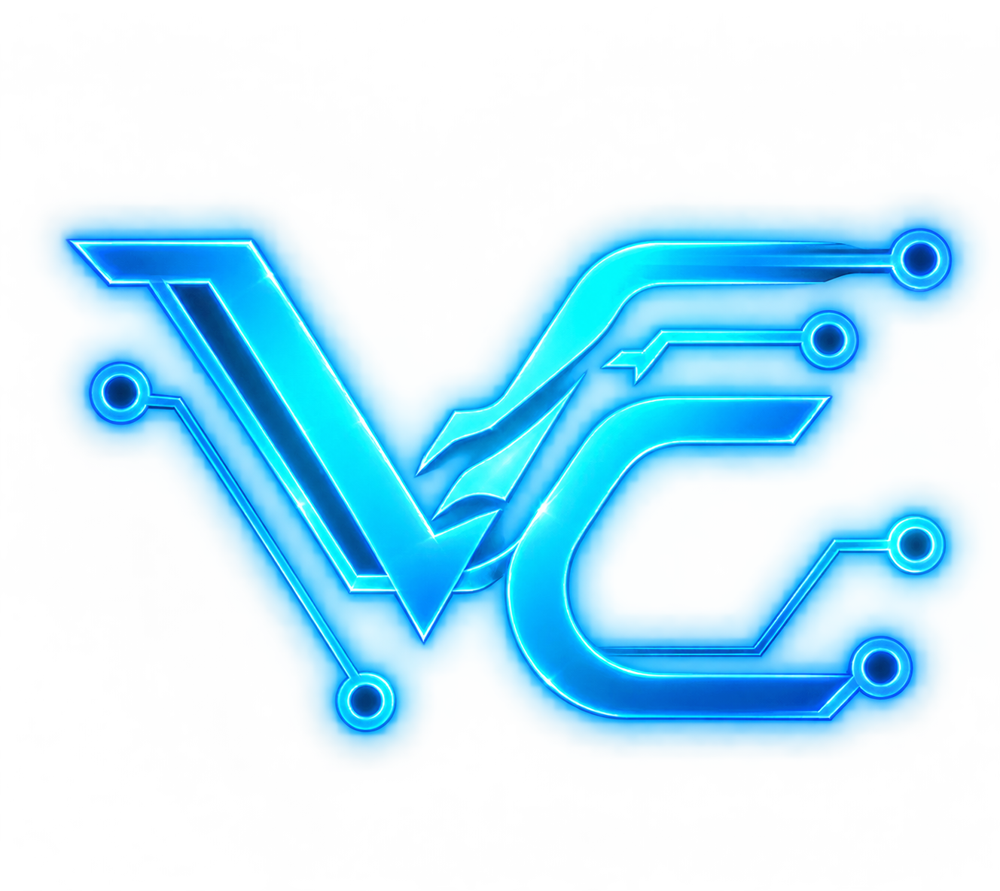

Learning by building
I'm practising programming fundamentals and working on small projects to strengthen my problem-solving skills through hands-on experience.

VISHESH.CSE ← Home01 / ABOUT ME
I'm Vishesh, a first-year B.Tech Computer Science and Engineering student. I'm developing my foundations in programming while exploring artificial intelligence, software projects, and ways to turn ideas into useful tools. I'm at the beginning of the journey, and this site is a record of what I learn and build along the way.
I'm practising programming fundamentals and working on small projects to strengthen my problem-solving skills through hands-on experience.
Artificial intelligence is an area I'm curious about. My longer-term ambition is to understand language models deeply and explore how one could be built.
I enjoy combining technical learning with creative ideas, personal writing, and experiments that could become practical tools.
02 / THE JOURNEY
Focus on C programming, core computer science concepts, problem-solving, and consistent practice.
Keep developing my portfolio and Pragya, my personal assistant project, while learning from each iteration.
Work toward stronger AI and machine-learning knowledge, with the long-term goal of exploring language-model development.
This is an evolving journey, not a finished story. The next pages show what I'm learning and building.